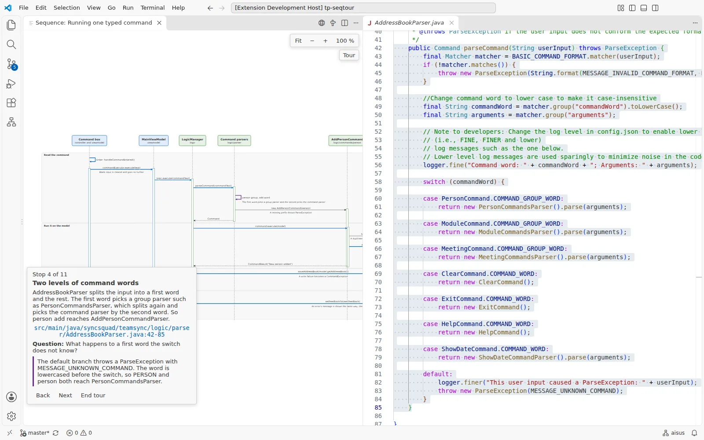
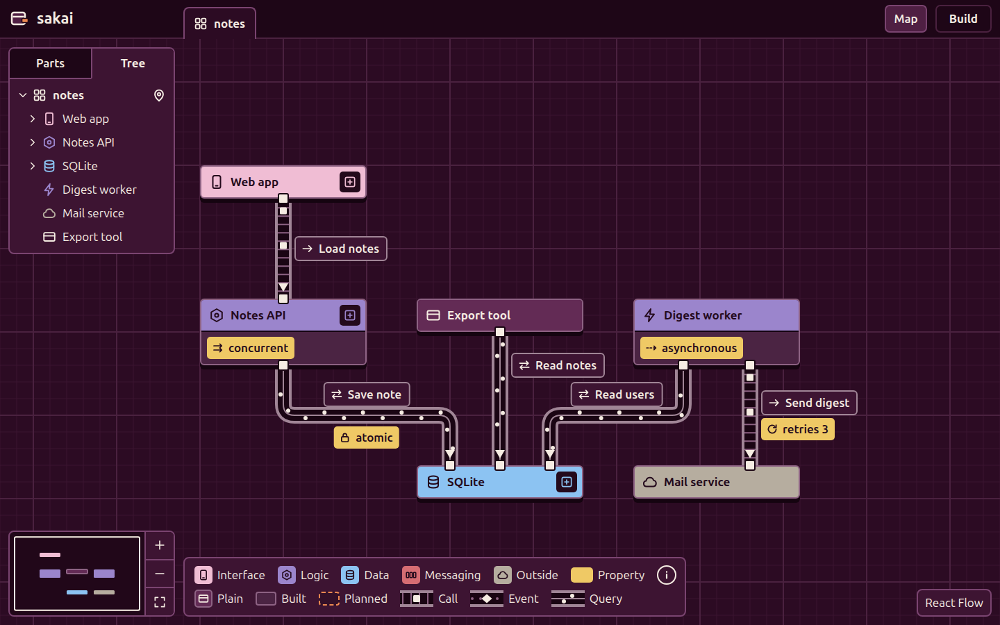

7 Future plans and strategies
7.1 aisus cloud
aisus stays free on the developer's machine. The money is in teams. aisus cloud keeps a team's maps in one place, with a page for each pull request, the history of every map and links anyone on the team can open. It stores maps and check results, never code.
The free GitHub Action is the way in. It comments on every pull request with the boxes the change touches, and it spends no tokens. Turning on upload adds the pull request pages, the history and the team page. That is what a team pays for.
| Plan | Price | For |
|---|---|---|
| Free | US$0 | The extension, the skills, the command line and the Action's comment |
| Pro | US$5 a month | aisus cloud for one person's repositories |
| Team | US$10 per seat a month | aisus cloud for a GitHub organization, with seats and the team page |
| Enterprise | Quote | aisus cloud on the company's own servers |
The cloud runs on one small server. The agent work happens on the user's machine, with the user's own agent, and aisus never pays for inference. Each paying team adds revenue and almost no cost.
Three steps stand between the cloud and its first paying team. Private repositories need sign-in through a GitHub App. The database moves from PGlite to Postgres. Payments, built and running in Stripe's test mode, go live once about ten teams upload maps every week.
7.2 aisus for education
Courses hand students code they did not write. CS2103 gives every team a working codebase to extend, and the first weeks go to finding out how it fits together. Agents make the problem worse. A student can now ship a feature in a codebase they never understood.
aisus already has the tools a course needs. A tour walks a newcomer through the map one stop at a time. Each stop opens the code, explains it and asks a question.

Bug hunt, still hidden while we test it, has the agent build a task in steps and plant one bug in each. The student finds and fixes it, and the agent never fixes it for them. Check my understanding asks three questions about a change and grades each answer against the code. Every finished tour, hunt and check lands in the student's practice log.


Our first course is CS2103. A teaching team can ship a map and a tour with the starting code, and every student meets the architecture before they change it. CS2103 works in IntelliJ IDEA, and aisus already runs there. The TeamSync demo in section 1.1 is a CS2103T project, mapped and toured by aisus.
7.3 sakai
aisus maps the code that exists. Its spiritual successor, sakai, runs the other way. In sakai the program is a map of blocks and links, and a coding agent on the developer's machine writes the code that makes the map true. It is the step section 1.4 predicts. Assembly gave way to C, C to Python, and Python to prompts. In sakai the architecture itself is what a person works in.
A user imports a codebase and gets its map, or starts from an empty map, places blocks, links them and presses Build. Links are as real as blocks, with kinds, properties and code of their own. The facts that decide whether a design works, such as concurrent, atomic or asynchronous, sit on the map where nobody can miss them. It should feel like an engineering strategy game.

Our team is building sakai now. In its first four days it gained the map, blocks that hold maps of their own, and import from a real codebase. We are starting to ask, in earnest, whether sakai is a startup.